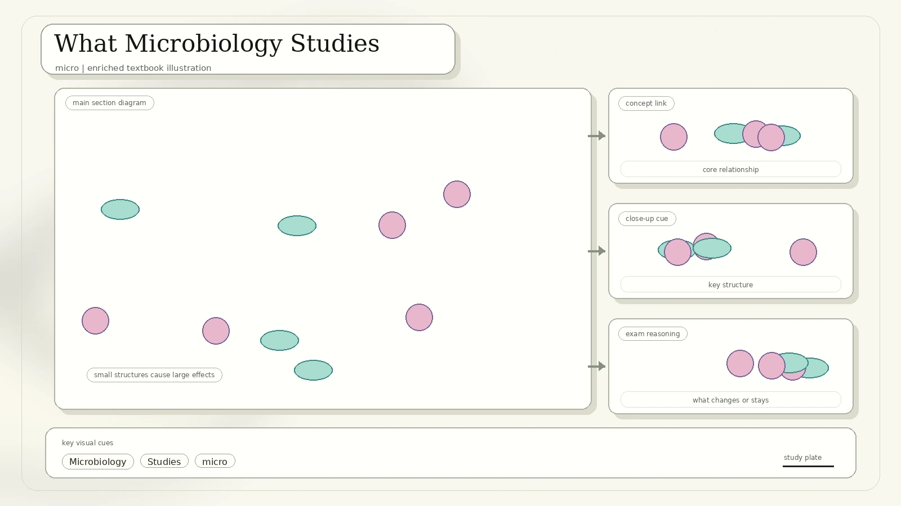
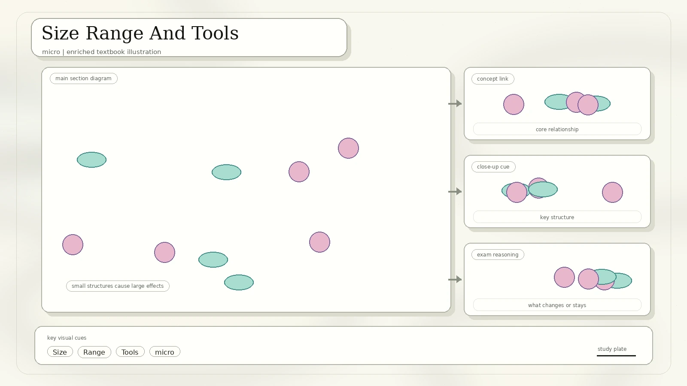
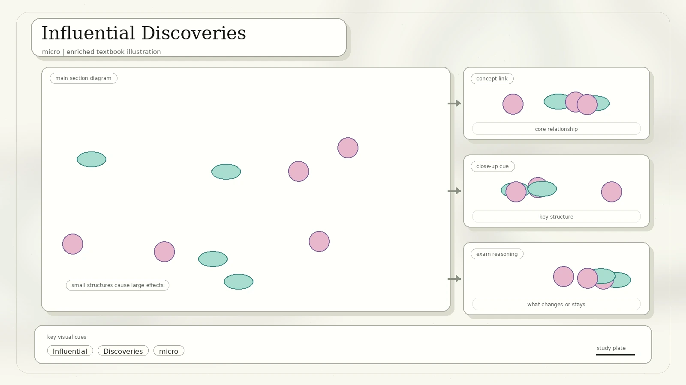
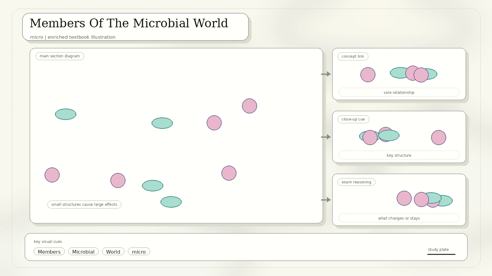
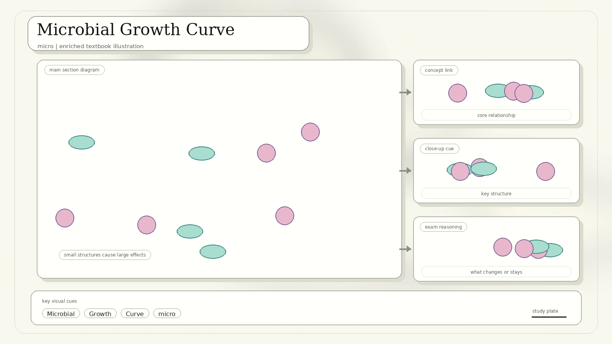
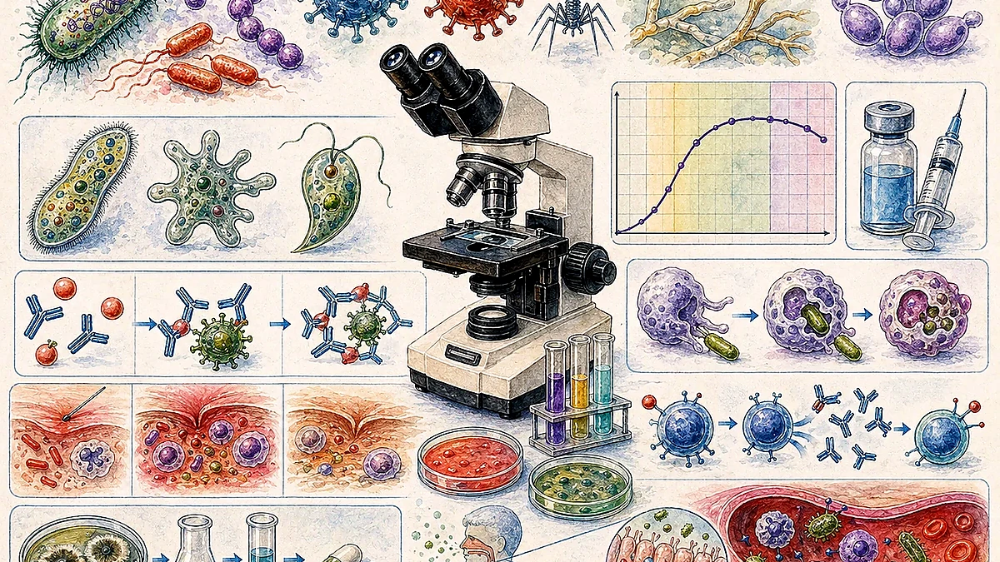
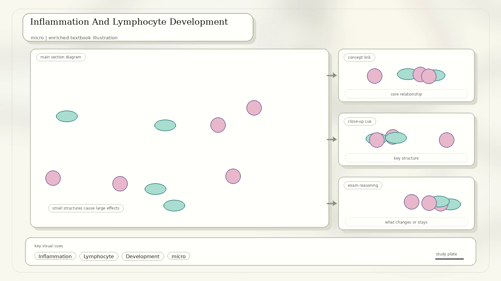
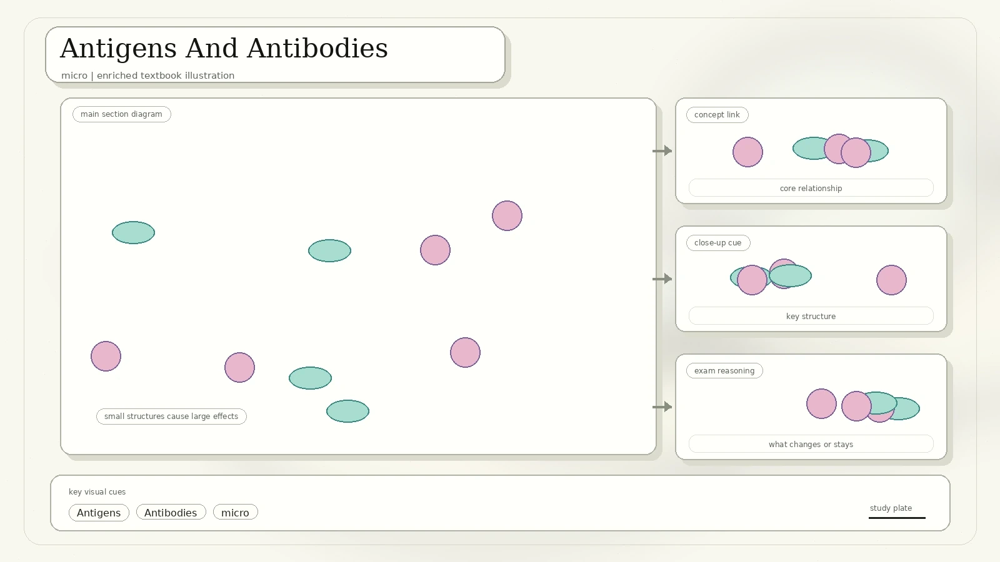
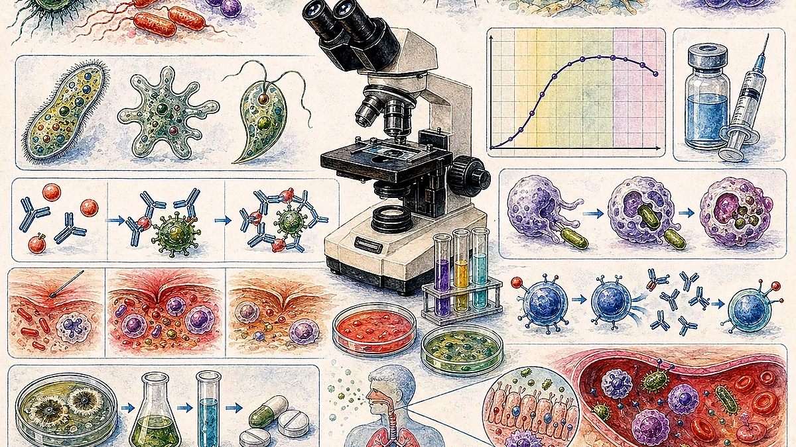

What Microbiology Studies
Microbiology is the branch of science dealing with the structure, function, classification, and economic importance of microorganisms. The scan lists branches including bacteriology, virology, mycology, immunology, parasitology, microbial ecology, applied microbiology, and medical microbiology.

They are often too small to be seen clearly with the unaided eye.
Microbes can spoil food and cause disease, but also make food, medicine, fuel, and useful enzymes.
The existence of microorganisms was proposed before they were directly observed.
Size Range And Tools
The size scale in the scan places microorganisms across micrometre and nanometre ranges. Viruses are generally smaller than bacteria, while many eukaryotic cells are larger. Microbiology advanced only when better tools made the invisible visible.

| Tool Or Scale | Converted Content | Study Note |
|---|---|---|
| Compound microscope | Uses lenses to magnify tiny specimens. | Useful for cells and many microorganisms. |
| Dissecting microscope | Used for larger specimens and surface detail. | Lower magnification but wider working space. |
| Hooke and Leeuwenhoek | The scan highlights early microscope development and observation of tiny life. | Robert Hooke helped popularize microscopy; Antonie van Leeuwenhoek observed microbes in detail. |
Influential Discoveries
The scan connects three major historical advances: vaccination, pasteurization, and antibiotics. Each changed how people understood and controlled disease.

| Scientist Or Process | What Happened | Why It Matters |
|---|---|---|
| Edward Jenner | Observed that milkmaids exposed to cowpox seemed protected from smallpox, then tested cowpox material in an early vaccination experiment. | Introduced the idea of using a weaker related disease agent to train protection against a dangerous disease. |
| Louis Pasteur | Used swan-neck flask experiments to show that boiled broth remained uncontaminated when microbes from air were blocked. | Helped disprove spontaneous generation and support germ theory. |
| Pasteurization | Heating food or drink, such as milk, to reduce harmful microorganisms. | The scan lists 63 degrees C for 30 minutes and also mentions UHT treatment at 135 to 150 degrees C for a few seconds. |
| Alexander Fleming | Observed that mold growing on a bacterial culture produced a clear zone where bacteria did not grow. | The mold was Penicillium, and the antibacterial chemical was called penicillin. |
Members Of The Microbial World
Microorganisms are simple in construction and often unicellular. The scan groups organisms and biological entities studied by microbiologists into cellular and acellular categories.

| Group | Examples Or Description | Important Caution |
|---|---|---|
| Fungi | Yeasts and molds can be microscopic; some are decomposers or pathogens. | Not all fungi are harmful. |
| Protists | Amoebae and other unicellular eukaryotes. | Some live freely; some are parasitic. |
| Bacteria | Prokaryotic cells with cell walls and no nucleus. | Some cause disease, but many are beneficial. |
| Archaea | Prokaryotes distinct from bacteria; many live in extreme environments. | They are not simply "old bacteria"; they are a separate domain. |
| Viruses | Acellular particles made of genetic material and protein coat. | They need host cells to reproduce. |
| Prions | Infectious misfolded proteins. | They contain no DNA or RNA. |
Microbial Growth Curve
A microbial growth curve shows the four-phase population pattern of microorganisms in a closed system: lag, log or exponential, stationary, and death. It plots viable cell number over time as microbes adjust, divide rapidly, stop net growth, and eventually decline.

Cells adapt to the environment and prepare for division.
Cells divide rapidly; population increases exponentially.
Cell division rate equals cell death rate, giving no net population growth.
Nutrient depletion and waste accumulation cause viable cell number to fall.
Human Immune System And Defense Lines
The immune system lets the body avoid or limit infections. Innate immunity responds quickly using general defenses, while adaptive immunity responds more specifically and can produce memory.

| Defense | Examples | What It Does |
|---|---|---|
| External defenses | Skin, mucous membranes, secretions, and antimicrobial substances. | Keep pathogens out or neutralize them before infection begins. |
| Innate internal defenses | Phagocytes, natural killer cells, antimicrobial proteins, inflammation, and fever. | Act quickly and broadly after infection starts. |
| Adaptive humoral response | B cells and antibodies. | Defend against pathogens and toxins in body fluids. |
| Adaptive cell-mediated response | T cells, including cytotoxic T cells. | Defend against infected body cells and abnormal cells. |
Inflammation And Lymphocyte Development
Damage to body tissues can trigger inflammation. The scan lists causes such as microbial infection, heat, radiant energy, electricity, sharp objects, acids, bases, and gases. The classic signs are pain, redness, swelling, heat, and loss of function.

More blood flows to the affected area, bringing immune cells and repair materials.
Both originate from stem cells in red bone marrow. T cells mature in the thymus, while B cells mature mainly in bone marrow.
Antigens And Antibodies
Antigens are substances that induce antibody production. The scan notes that most antigens are proteins or large polysaccharides. Antibodies bind to specific regions of antigens called epitopes or antigenic determinants.

| Term | Meaning | Example Detail |
|---|---|---|
| Antigen | A substance that can trigger antibody production or immune recognition. | Pathogen capsules, cell walls, flagella, fimbriae, toxins, and viral coats can be antigenic. |
| Antibody | A compact protein designed to recognize and bind a specific antigen shape. | Antibodies can be secreted by plasma cells or attached to B-cell membranes. |
| Monoclonal antibody | An antibody population with the same specificity. | Used in tests and medical tools where one target must be recognized reliably. |
Immunological Memory, Vaccines, And Antigen Test Kits
The first exposure to an antigen produces a primary response. Some activated B cells become memory cells rather than plasma cells. On later exposure to the same antigen, the secondary response is faster, stronger, and often longer lasting.

IgM is the first antibody class made during a primary response.
A B cell can switch to other antibody classes such as IgG, IgE, or IgA while keeping antigen specificity.
The scan compares vaccine platforms including RNA, viral vector, whole-virus, virus-like particle, and protein subunit approaches.
Commercial kits use monoclonal antibodies to recognize target antigens, such as in rapid tests for pathogens or pregnancy hormones.
Review Questions
Describe the classification of microorganisms and explain why viruses are not cellular organisms.
Explain an influential discovery in microbiology and how it changed medicine or food safety.
Compare innate immunity and adaptive immunity using speed, specificity, and memory.
Explain why an antigen test needs both a test site and a control site.
Source converted from IMG_20260427_0036.pdf. The diagrams and historical examples were rebuilt into structured HTML, with added explanations for growth curves and immune-response logic.